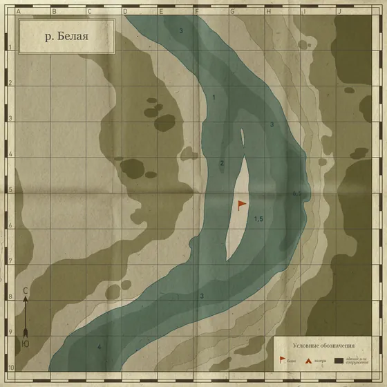
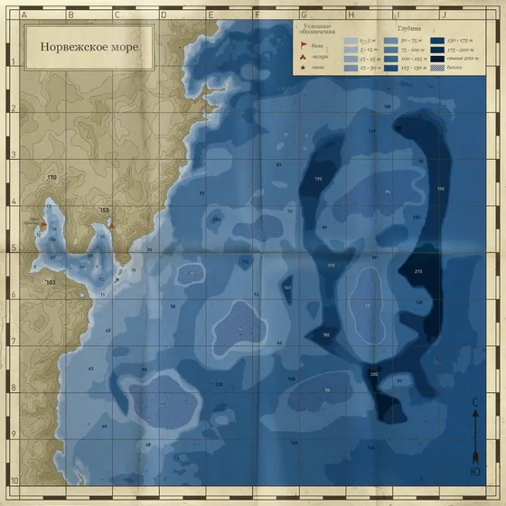
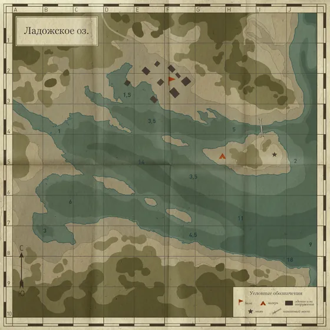
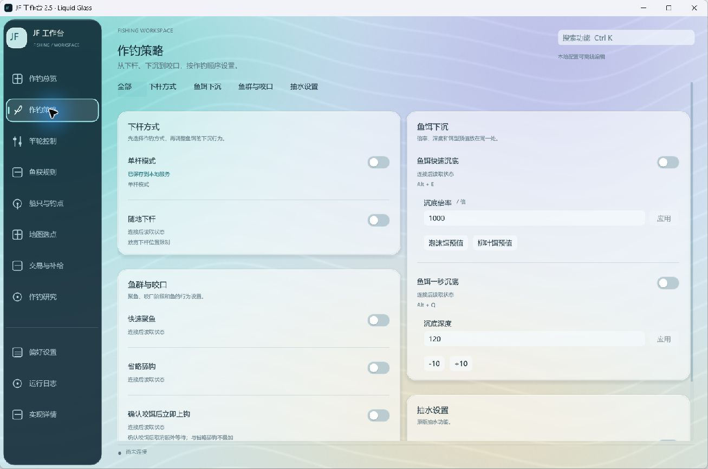
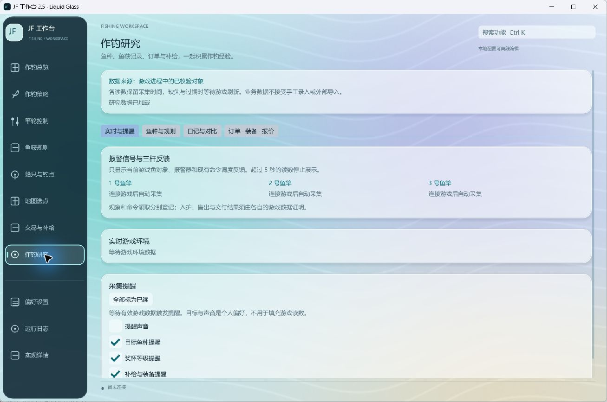
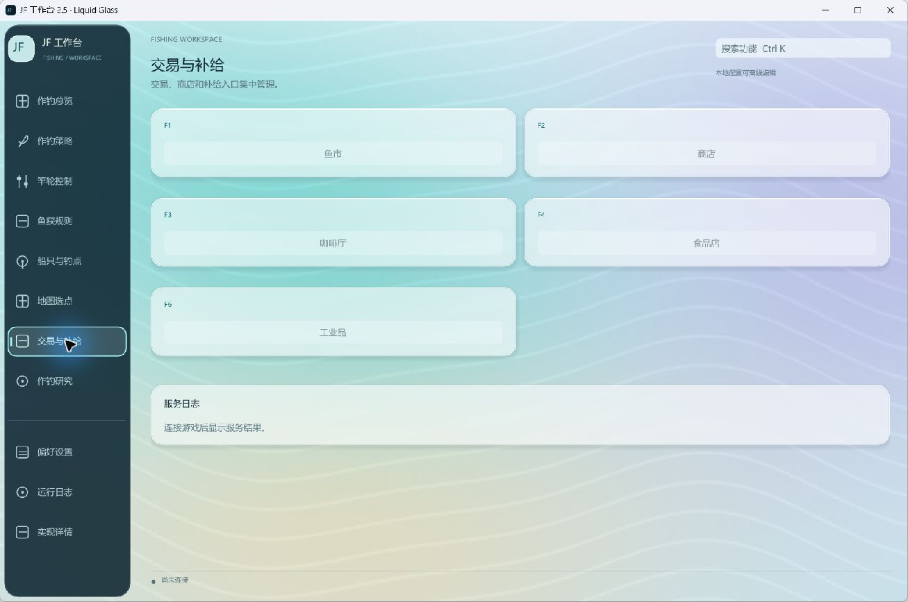
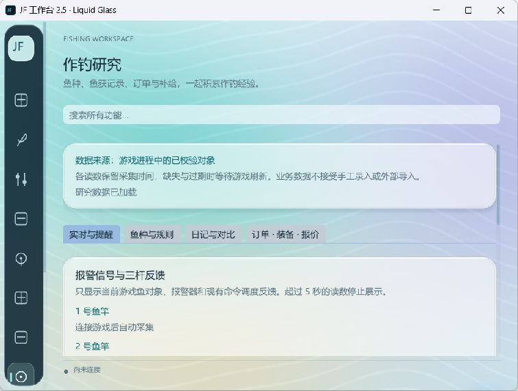

作钓与鱼饵
按下杆、控饵和咬口的顺序配置作钓流程：自动作钓的抛投、换饵与入护，鱼饵快速沉底与一秒沉底，目标深度与持续控饵，以及咬口阶段与鱼的行为。
- 自动作钓
- 鱼饵与控深
- 咬口与鱼行为
AltE快速沉底AltQ一秒沉底
FEATURES · 核心功能
下杆、控饵、搏鱼、筛选，沿着熟悉的作钓顺序找到所需功能。地图、钓点、补给与记录，也都各就其位。
按下杆、控饵和咬口的顺序配置作钓流程：自动作钓的抛投、换饵与入护，鱼饵快速沉底与一秒沉底，目标深度与持续控饵，以及咬口阶段与鱼的行为。
AltE快速沉底AltQ一秒沉底
收线倍率、收线方式与入护速度放在一处；拉力档位、直接张力与竿体保护集中设置。
拉力档位交互预览
通用重量上下限、排除与保留名单、鱼库与逐鱼种阈值；选择鱼竿后即可手动脱钩或强制入护。
Alt3手动脱钩Alt2强制入护



人物与船只分别收藏钓点，可指定坐标移动或使用海图常用点；船只推进力、锁船与潜艇方式独立设置。
CtrlE锁船CtrlQ潜艇
鱼市、商店、咖啡厅、食品店与工业品入口集中管理，服务返回内容记录在服务日志中。
在“设置 → 提示与状态显示”开启独立置顶的状态窗，可拖到主窗口外或另一块屏幕；主窗隐藏、最小化后仍持续刷新。
现场动态、鱼种与规则、作钓记录、订单与物资，四个页签各司其职。查看带采集时间的游戏读数，搜索历史观察，并导出 JSON / CSV。
Ctrl + K 搜索普通控件或具体批量视图，结果保留参数上下文并显示所属页面；“前往分区”直接定位到目标卡片。
WORKSPACE · 导航结构
作钓控制、地图与记录、工作台，三组导航串起 11 个页面。点选下方入口，看看每个页面能做什么。
单项调整随用随改，批量设置集中应用；也可以用 Ctrl + K 搜索，直接找到对应功能。
PREVIEW · 界面预览
清晰的侧边导航，按用途排列的功能卡片，三支鱼竿的状态集中呈现。切换下方视图，看看不同任务下的工作台。




作钓总览：扫描并连接游戏进程，三支鱼竿的读数与本次作钓状态集中显示。
截图来自 2.5 版本；2.7.0 已按用途重组导航与页面名称，视觉风格保持一致。
MAPS · 水域地图
从宁静湖泊到曲折河流，再到开阔海域。浏览地图、标记目标、收藏钓点，让每一次出发都有方向。
HOTKEYS · 快捷键
常用操作，一按即达。选择熟悉的 JF 或原 RF4 方案，沉底、收线、入护与补给不必来回寻找；Home 随时显示或隐藏工作台。
DATA · 数据与记录
现场看状态，回头看记录。把三杆反馈、天气环境、鱼种规则与订单物资放在一起，查找和对比都更方便。观察记录保留采集时间，鱼市报价可单独查看。
三杆反馈与提醒集中查看，同时呈现气温、风、雾和天气。当前场景与钓组信息随手可查，重要变化及时留意。
汇总已加载水域的鱼种目录，无需先钓到鱼。搜索目标鱼种、查看筛选条件，提前预览保留规则。
记录三杆的鱼类观察，以及场景、坐标、时间、天气和钓组类型。按水域与位置汇总对比，支持搜索、分页与完整导出。
咖啡厅订单的鱼种、水域、最低重量、奖励与到期时间，背包与当前竿轮，以及鱼市逐条报价。需先在游戏中打开对应界面让对象加载。